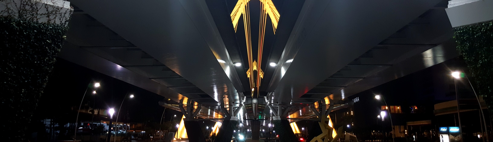
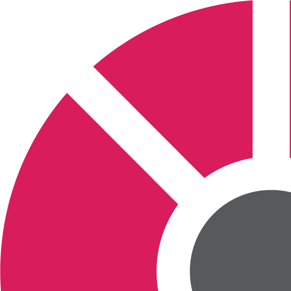

<div class="row brands -main flex-row"><!-- Start of section -->

	<!-- Section blur-->
		<div class="col-xs-12 "> 
 			<div class="darken blur-wrap">
				
			</div>
		</div>
	<!-- / Section blur -->

	<!--Start of navigation component -->
		<div class="col-xs-12 navi-container">
			<app-navi></app-navi>
		</div>
	<!-- End of navigation component-->

	<!-- Section pattern -->
		<div class="col-xs-12"> 			
				<div class="lines-container">
					
				</div>
		</div>
	<!-- / Section pattern -->

	<!-- Section title -->
		<div class="col-xs-12 section-title">
			<div class="kreis-logo-sm"><!-- Small logo gray -->
 				
 			</div>
 			<h1 >Brands</h1>
		</div>
	<!-- / Section title -->

	<!-- Section logo -->
			<div class="col-xs-12 logo-container">
					
				</div>
	<!-- / Section logo -->

	<!-- Section footer -->
			<div class="col-xs-12 footer-container">
				<footer></footer>
			</div>	
	<!-- / Section footer -->

</div><!--End of Section -->